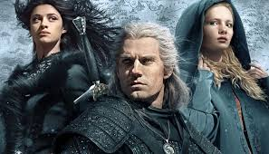
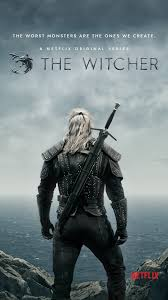
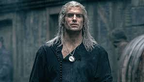

The Witcher, o jogo
Geralt tem um pesadelo sobre a cidade de Kaer Morhen, no qual sua aluna Cirilla (Ciri) é capturada pela caçada selvagem e ao acordar, parte em uma jornada para procurar Yennifer, então descobre que Cirilla realmente está em perigo
Watch

The Witcher
Para conseguir informações sobre Ciri, Geralt foi forçado a encontrar a esposa e filha do barão sanguinário
Watch

The Witcher
Após encontrar a família do barão, Geralt de Rivia, descobre que Cirilla estava em Vonigard e segue sua viagem
WatchAqui vemos a origem dos monstros de The Witcher
No mundo de The Witcher, há infinitos monstros que deram mais dinheiro pra galera que transformou matar eles em profissão
Watch